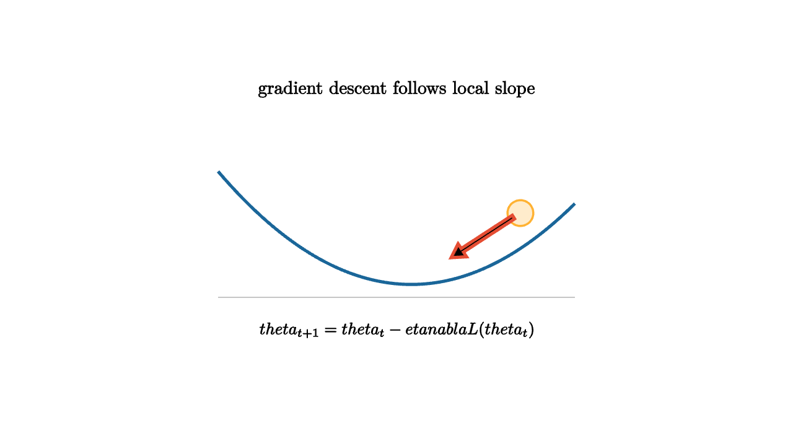

The most common training loop in machine learning is a repeated question: if the parameters move a little, which direction makes the loss fall fastest? The gradient answers this locally. Gradient descent then takes a step in the opposite direction:
The learning rate $\eta$ controls the size of the step. The gradient controls the direction.

source
let soft = |col, amount| lerp(WHITE, col, amount)
mesh descent = [
center{1.35u} Text("gradient descent follows local slope", 0.66),
stroke{LIGHT_GRAY, 1} Line(1.8l + 0.75d, 1.8r + 0.75d),
stroke{BLUE, 3} ExplicitFunc(|x| 0.3 * (x - 0.15) * (x - 0.15) - 0.62, [-1.8, 1.8, 120]),
center{1.25r + 0.1u} fill{soft(ORANGE, 0.25)} stroke{ORANGE, 2} Circle(0.13),
stroke{RED, 3} Arrow(1.18r + 0.06u, 0.55r + 0.35d),
center{1.08d} Tex("\\theta_{t+1}=\\theta_t-\\eta\\nabla L(\\theta_t)", 0.60)
]This update is local. It knows the slope at the current point, not the whole landscape. That is enough to train large models because global search would be hopeless in millions of dimensions. The gradient is cheap relative to trying every direction.
source
let soft = |col, amount| lerp(WHITE, col, amount)
"Small Step"
mesh scene = [
center{1.3u} Text("small learning rates move steadily", 0.62),
stroke{BLUE, 3} ExplicitFunc(|x| 0.25 * x * x - 0.55, [-1.7, 1.7, 120]),
stroke{GREEN, 3} Polyline([1.35l + 0.0u, 1.05l + 0.2d, 0.75l + 0.33d, 0.45l + 0.42d])
]
play Write(0.9)
"Large Step"
scene = [
center{1.3u} Text("large learning rates can overshoot", 0.62),
stroke{BLUE, 3} ExplicitFunc(|x| 0.25 * x * x - 0.55, [-1.7, 1.7, 120]),
stroke{RED, 3} Polyline([1.35l + 0.0u, 0.85r + 0.1d, 1.2l + 0.08u, 1.0r + 0.0u])
]
play Trans(0.8)
"Stochastic"
scene = [
center{1.3u} Text("mini-batches add useful noise to the path", 0.62),
stroke{ORANGE, 3} Polyline([1.4l + 0.15u, 1.0l + 0.35d, 0.55l + 0.1d, 0.1l + 0.45d, 0.25r + 0.25d, 0.55r + 0.52d]),
center{1.05d} Text("the average trend still points downhill", 0.62)
]
play Trans(0.8)Batch gradient descent uses the whole training set to compute each update. Stochastic gradient descent uses one example or a mini-batch. Mini-batches are noisy, but that noise can help the optimizer move through flat regions and avoid overly precise adaptation to one full-batch direction. It also makes training computationally practical.
Momentum adds memory:
The velocity term averages recent gradients. In a narrow valley, momentum can reduce zigzagging and carry progress along the valley floor. Adaptive methods such as Adam also rescale coordinates based on recent gradient magnitudes, which helps when different parameters see very different units of change.
Scaling matters. If one feature is huge and another is tiny, the loss surface can become stretched. The gradient then behaves differently along each coordinate. Standardization, normalization layers, and careful initialization all help shape a landscape where local slope gives useful steps.
Gradient descent is easy to write and subtle to run. A loss curve that decreases smoothly usually indicates a reasonable learning rate. A curve that explodes signals steps that are too large or gradients that are poorly scaled. A curve that sits flat may indicate a learning rate too small, saturated activations, or a model that lacks the needed features.
The lesson is practical: derivatives turn training into navigation. Each step is a local measurement, and the training path is the accumulation of those measurements.